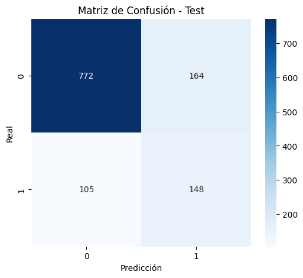

Random Forest#
Librerías#
import warnings
import numpy as np
import pandas as pd
import seaborn as sns
import matplotlib.pyplot as plt
warnings.filterwarnings("ignore")
from sklearn.metrics import *
from sklearn.ensemble import *
from sklearn.pipeline import *
from xgboost import XGBClassifier
from sklearn.preprocessing import *
from sklearn.model_selection import *
from sklearn.feature_selection import *
Data#
df = pd.read_excel("../data/processed/df_to_model_frenel_15102025.xlsx")
df.head()
| target_tfg | pais_encuesta | grupo_origen | pais_nacimiento | edad | genero | grupo_etnico | nivel_escolaridad | regimen_salud | ocupacion | ... | hacinamiento_hogar | hogar_migrantes | grupo_origen_ingles | ocupacion_agricola | imc | clasificacion_imc | grupo_edad | clasificacion_tfg | clasificacion_pa | creatinina_elevada | |
|---|---|---|---|---|---|---|---|---|---|---|---|---|---|---|---|---|---|---|---|---|---|
| 0 | 0 | COLOMBIA | AFRODESCENDIENTE | COLOMBIA | 49 | Femenino | AFRODESCENDIENTE | Primaria | Asegurador público | Comerciante | ... | NO | NO | AFRODESCENDANT | NO | 32.326531 | Obesidad | 41-50 | Ligera (60-89) | Hipertensión grado 2 (moderada) | False |
| 1 | 1 | COLOMBIA | AFRODESCENDIENTE | COLOMBIA | 83 | Femenino | AFRODESCENDIENTE | No escolarizado | Asegurador privado | Desempleado | ... | NO | NO | AFRODESCENDANT | NO | 22.206331 | Normal | 60+ | Leve Moderada (45-59) | Normal-alta | True |
| 2 | 0 | COLOMBIA | AFRODESCENDIENTE | COLOMBIA | 70 | Femenino | AFRODESCENDIENTE | No escolarizado | Asegurador público | Comerciante | ... | SI | NO | AFRODESCENDANT | NO | 20.820940 | Normal | 60+ | Ligera (60-89) | Hipertensión grado 2 (moderada) | False |
| 3 | 0 | COLOMBIA | AFRODESCENDIENTE | COLOMBIA | 25 | Femenino | AFRODESCENDIENTE | Técnica | Asegurador público | Comerciante | ... | NO | NO | AFRODESCENDANT | NO | 23.738662 | Normal | 18-30 | Ligera (60-89) | Normal | True |
| 4 | 1 | COLOMBIA | AFRODESCENDIENTE | COLOMBIA | 64 | Femenino | AFRODESCENDIENTE | Primaria | Asegurador público | Desempleado | ... | NO | NO | AFRODESCENDANT | NO | 19.257029 | Normal | 60+ | Leve Moderada (45-59) | Normal | True |
5 rows × 57 columns
Preprocesamiento#
Selección de Variables#
data_modelo = df.drop(columns=['pais_encuesta', 'pais_nacimiento', 'ocupacion', 'georeferenciacion', 'grupo_origen_ingles', 'tasa_filtracion_glomerular'])
data_modelo_numericas= data_modelo.drop(columns = ['clasificacion_imc', 'grupo_edad', 'clasificacion_tfg', 'clasificacion_pa', 'creatinina_elevada', 'creatinina'])
data_modelo_categoricas = data_modelo.drop(columns = ['peso', 'grupo_edad', 'talla', 'presion_arterial_sistolica', 'presion_arterial_diastolica', 'creatinina', 'imc'])
Codificación Variables Categóricas#
cat_cols = data_modelo_numericas.select_dtypes(include=['object']).columns
num_cols = data_modelo_numericas.select_dtypes(include=['int64', 'float64']).columns
print("Categóricas:", len(cat_cols))
print("Numéricas:", len(num_cols))
Categóricas: 38
Numéricas: 7
df_encoded = pd.get_dummies(data_modelo_numericas, columns=cat_cols, drop_first=True)
Modelos#
Conjuntos de Train y Test#
X = df_encoded.drop('target_tfg', axis=1)
y = df_encoded['target_tfg']
X_train, X_test, y_train, y_test = train_test_split(X, y, stratify=y, random_state=42)
print(f' X_train.shape: {X_train.shape}\n X_test.shape: {X_test.shape}\n y_train.shape: {y_train.shape}\n y_test.shape: {y_test.shape}')
X_train.shape: (3567, 64)
X_test.shape: (1189, 64)
y_train.shape: (3567,)
y_test.shape: (1189,)
KBest#
select = SelectKBest(score_func=f_classif, k=25)
X_train_selected = select.fit_transform(X_train, y_train)
X_test_selected = select.transform(X_test)
Variables seleccionadas por el SelectKbest: con estas 25 variables se entrenará el modelo
F_values, p_values = f_classif(X, y)
feature_scores = pd.DataFrame({
'Variable': X.columns,
'F_value': F_values,
'p_value': p_values,
'Seleccionada': select.get_support()
})
feature_scores = feature_scores.sort_values(by='F_value', ascending=False)
print("\nVariables seleccionadas por SelectKBest:")
feature_scores[feature_scores['Seleccionada'] == True]
Variables seleccionadas por SelectKBest:
| Variable | F_value | p_value | Seleccionada | |
|---|---|---|---|---|
| 0 | edad | 352.510702 | 6.323705e-76 | True |
| 47 | medicinas_presion_arterial_SI | 256.782815 | 2.517594e-56 | True |
| 39 | antecedentes_presion_alta_SI | 236.618258 | 3.805371e-52 | True |
| 54 | tirilla_reactiva_SI | 130.586165 | 7.458186e-30 | True |
| 43 | antecedentes_enfermedad_circulatoria_SI | 114.182136 | 2.362039e-26 | True |
| 18 | regimen_salud_Asegurador público | 100.359432 | 2.165306e-23 | True |
| 19 | regimen_salud_No asegurado | 80.931277 | 3.313030e-19 | True |
| 6 | grupo_origen_AGRICOLA | 80.799835 | 3.536951e-19 | True |
| 11 | grupo_etnico_MESTIZO | 74.745624 | 7.216961e-18 | True |
| 44 | medicinas_para_diabetes_SI | 71.248038 | 4.133727e-17 | True |
| 40 | paciente_diabetico_SI | 69.990533 | 7.746695e-17 | True |
| 58 | hogar_sercicios_basicos_SI | 61.704289 | 4.898723e-15 | True |
| 3 | presion_arterial_sistolica | 58.931382 | 1.968887e-14 | True |
| 48 | medicinas_colesterol_alto_SI | 47.940422 | 4.978834e-12 | True |
| 62 | hogar_migrantes_SI | 46.923023 | 8.323468e-12 | True |
| 30 | toma_hasta_embriagarse_NO APLICA | 45.935572 | 1.371027e-11 | True |
| 50 | diagnostico_proteina_sangre_orina_SI | 38.177335 | 6.999224e-10 | True |
| 38 | antecedentes_anemia_SI | 33.824610 | 6.425759e-09 | True |
| 10 | grupo_etnico_INDIGENA | 29.290203 | 6.537121e-08 | True |
| 59 | hogar_tecnologias_SI | 26.738387 | 2.425077e-07 | True |
| 7 | grupo_origen_INDIGENA | 25.645673 | 4.257245e-07 | True |
| 49 | diagnostico_insuficiencia_renal_cronica_SI | 25.211491 | 5.325372e-07 | True |
| 4 | presion_arterial_diastolica | 23.114437 | 1.573506e-06 | True |
| 42 | antecedentes_insuficiencia_cardiaca_SI | 22.952194 | 1.711357e-06 | True |
| 5 | imc | 20.488381 | 6.145925e-06 | True |
Implementación Modelo#
rf = RandomForestClassifier(random_state=42, class_weight='balanced')
param_grid_rf = {
'n_estimators': [100, 200, 300],
'max_depth': [None, 10, 20, 30],
'min_samples_split': [2, 5, 10],
'min_samples_leaf': [1, 2, 4],
'max_features': ['sqrt', 'log2']
}
grid_search_rf = GridSearchCV(
estimator=rf,
param_grid=param_grid_rf,
scoring='recall', # Optimizar Recall para reducir falsos negativos
cv=5,# Validación cruzada (5 folds)
n_jobs=-1, # Usar todos los núcleos del CPU
verbose=2
)
grid_search_rf.fit(X_train_selected, y_train)
best_rf = grid_search_rf.best_estimator_
print("Mejores Parámetros RF:", grid_search_rf.best_params_)
print("Mejor Recall en Validación Cruzada:", grid_search_rf.best_score_)
Fitting 5 folds for each of 216 candidates, totalling 1080 fits
Métricas y Resultados#
best_model = grid_search_rf.best_estimator_
y_train_pred = best_model.predict(X_train_selected)
recall_train = recall_score(y_train, y_train_pred)
print("MÉTRICAS EN TRAIN")
print("Recall Train:", recall_train)
print("\nReporte de Clasificación (Train):")
print(classification_report(y_train, y_train_pred))
📌 MÉTRICAS EN TRAIN
Recall Train: 0.7915567282321899
Reporte de Clasificación (Train):
precision recall f1-score support
0 0.94 0.88 0.91 2809
1 0.63 0.79 0.70 758
accuracy 0.86 3567
macro avg 0.79 0.83 0.80 3567
weighted avg 0.87 0.86 0.86 3567
y_test_pred = best_model.predict(X_test_selected)
print("MÉTRICAS EN TEST")
print("Recall Test:", recall_score(y_test, y_test_pred))
print("\nReporte de Clasificación (Test):")
print(classification_report(y_test, y_test_pred))
📌 MÉTRICAS EN TEST
Recall Test: 0.5849802371541502
Reporte de Clasificación (Test):
precision recall f1-score support
0 0.88 0.82 0.85 936
1 0.47 0.58 0.52 253
accuracy 0.77 1189
macro avg 0.68 0.70 0.69 1189
weighted avg 0.79 0.77 0.78 1189
# Matriz de confusión - Test
cm = confusion_matrix(y_test, y_test_pred)
plt.figure(figsize=(6, 5))
sns.heatmap(cm, annot=True, fmt='d', cmap='Blues') # Paleta azul
plt.title("Matriz de Confusión - Test")
plt.xlabel("Predicción")
plt.ylabel("Real")
plt.show()
